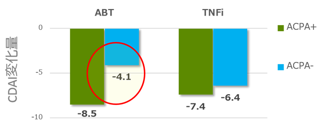
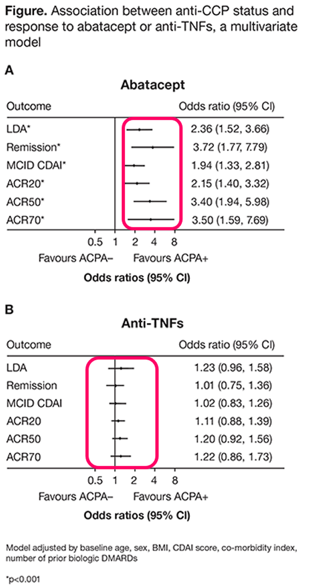

対オレンシア②セロポジ
ABTは抗CCP+ではTNF製剤と同等の効果で、抗CCP－では治療効果が低い
ACPAとABT若しくはTNF製剤の関係：A US NATIONAL OBSERVATIONAL STUDY
- ●実臨床下のRA治療でベースラインのACPAが生物学的製剤の反応に関係するかどうかを評価
- ●CORRONA RAレジストリを用いてABTとTNF製剤（2002年～2015年）を始めた患者で、治療開始前と6か月後のACPAを測定
- ●主要評価項目：ベースラインから6か月後のCDAIの変化
- ●n=566（罹病期間7年、前バイオ歴に違い無し）


ABTは抗CCP+で効果が高いのではなく、抗CCP-で効果が低い